Google is an extremely important tool! Not only is it a great search engine that is universally used, but it also offers other useful functions through a google drive. You can create spreadsheets, documents, slideshows and much more! Here's how to create your google account and the basics of using some of the tools available.

Creating a Google Account
Step 1: Open the Chrome app on your computer. Click the button below (this will take you to the Google Sign-up page)
Google Sign Up PageTo create an account, you will need to fill in your first and last name as well as your email. You don't need a gmail account (it's usually done with one, but you can use your current email instead by pressing 'use my current email'). You also will need to fill in your desired password and confirm it.
If you use the option 'use my current email address', you will need to confirm it with a code sent to this existing email.
Next it will ask for a phone number (which is optional), your birthdate and gender. Fill this information out and press next.
Next agree to terms, and you've created your google account.
Once you're signed in, when you go to google.com, you should see your account.
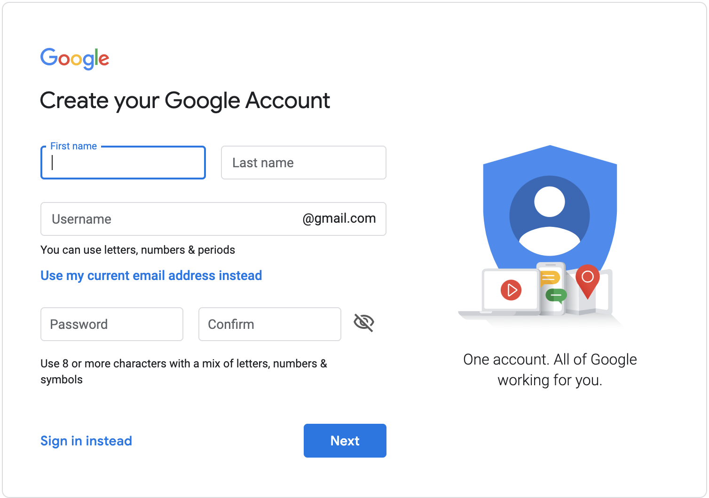
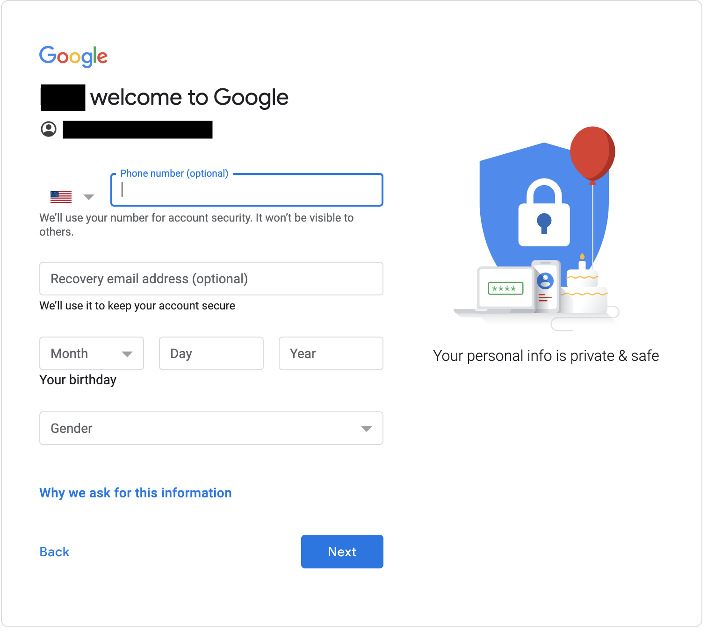
Accessing Your Drive
Once signed in, you can see your account when you go to google.com
In the top right corner, there's a waffle. Once you click it, you see the option to go to your account, gmail, drive, etc.
To access your drive, simply click on the button that says 'drive'. This should show you all of your slides, documents, drawings, etc.
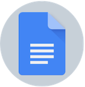
Google Docs
Google Docs is a basic writing platform. With your google account, you're able to create google docs and share your writing with others.
To create a google docs, enter your drive. In the top left corner there's a button that says "+ New". This will show a series of options. Click 'google docs'
To name your doc, click the part that says "untitled document". This will select the whole thing. Click delete and then name it what you desire.
Font Specifications
On google docs, you can change the font and size.
The font is automatically set to Arial. To change this, click the small down arrow, and then you'll be shown a lot of different fonts. You can click whichever you prefer, and then your document's font is changed.
Similarly, you have the option of changing the font size. It is automatically set to 11 and right next to the font. to change this, click the down arrow next to the font size and then type in whichever font size you prefer.
Revision History
Having your document's revision history can be extremely helpful. This allows you to see changes made over time and also allows you to restore your document's revision history. This means that you can change your document into a past version.
To see your version history press 'file' (This is right underneath your document name)
Underneath file there is an option that says 'version history'. When you click this, you can see the times, dates, and edits that were made.
To restore a version, click on the version on the right hand side. There is a blue button that says 'restore version history'. Click this, and you've restored that version.
Adding Charts, Drawings, and Tables
The option to add charts, drawings, and tables is located in the 'insert' option.
Tables
Click 'insert'. If you want to add a table, click the option 'table'--this will open a gray-shaded grid. To choose the dimensions of your table, move your mouse horizontally and vertically across the grid. the squares that are being included will turn a light blue.
Drawings
The next option is to insert a drawing. In google, there is another function similar to docs that allows you to insert images and draw on them. When you click on 'drawing' it will give you the option to create a new drawing or insert an old one. A new drawing will give you a blank drawing that you can add on to. This drawing will also exist inside of your drive. If you choose an already existing drawing, then you will see what was in your drawing. You will also have the option to edit the drawing, allowing you to change it without exiting your document.
Charts
When you click chart, you will see options of which chart you want to create. Each one once chosen will have filler information. This means that there will be random data and headings which you can replace with your own data. Another option is to use an already exisiting google sheets. This will enable you to instantly transfer any data that you have on a google sheets onto your google document as charts.
The data for each chart will be stored in a google sheets, which is the 'source' of the chart. To change the chart, there is a small link button in the top right corner of the chart. One option is to 'open source'. This means that the google sheets which is linked to your chart will be opened, and from there you can change the data and headings.
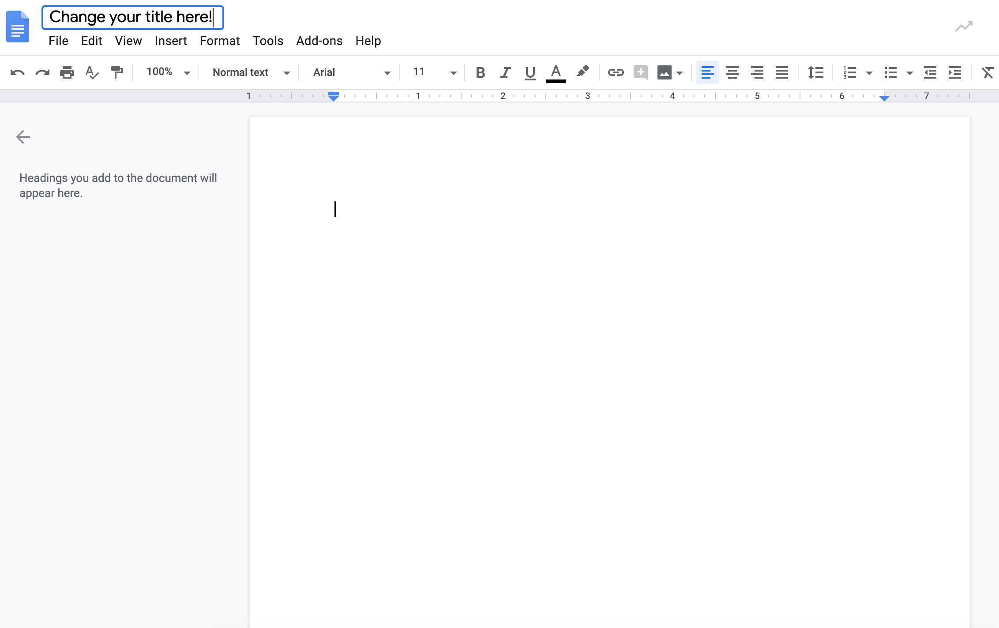
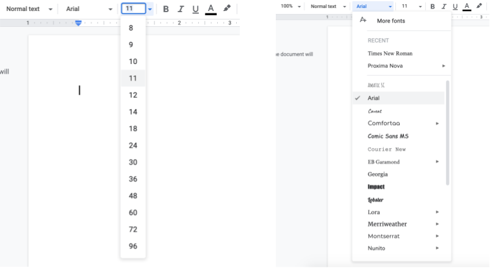
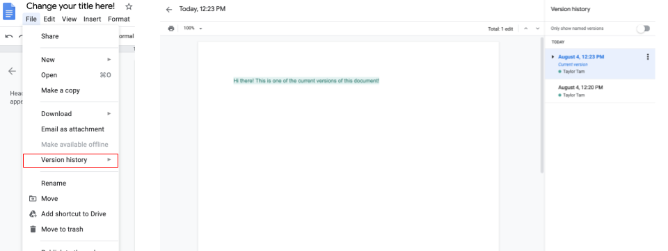
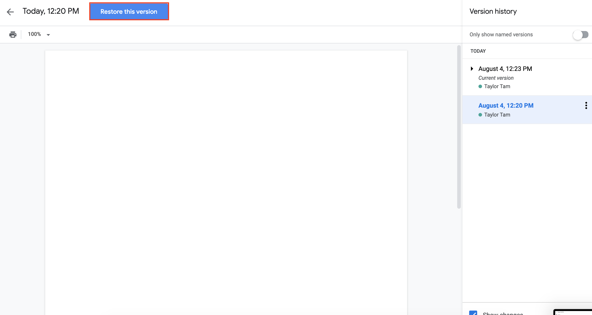
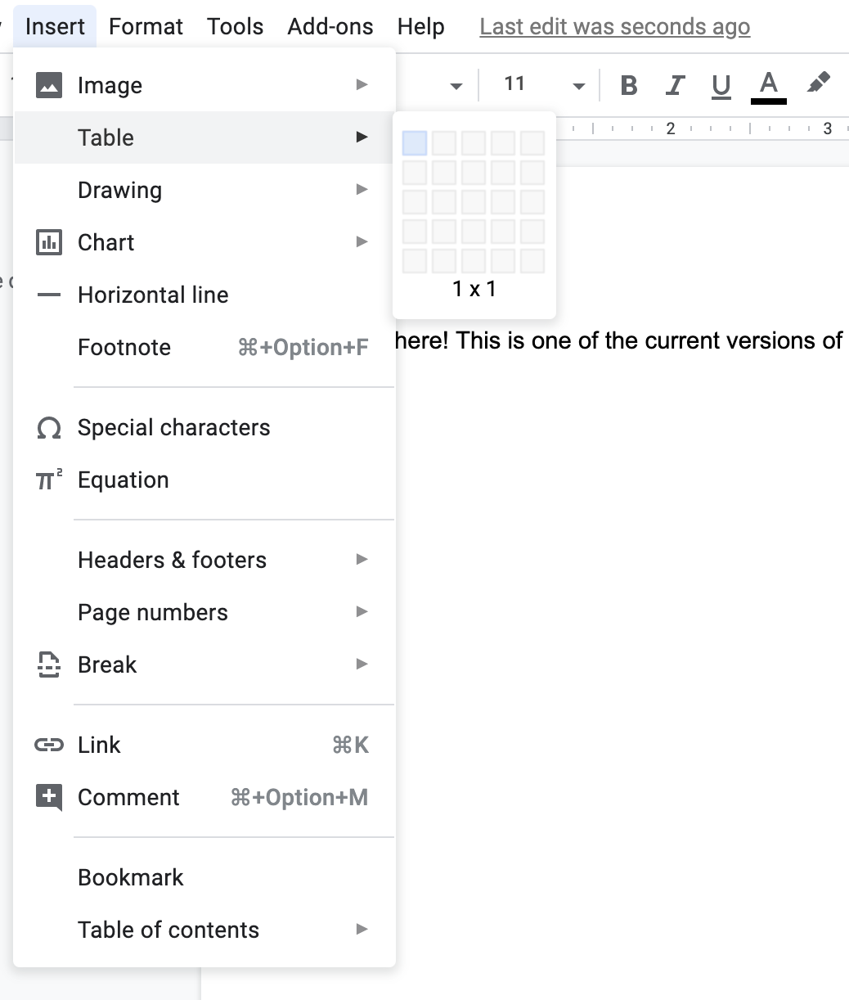
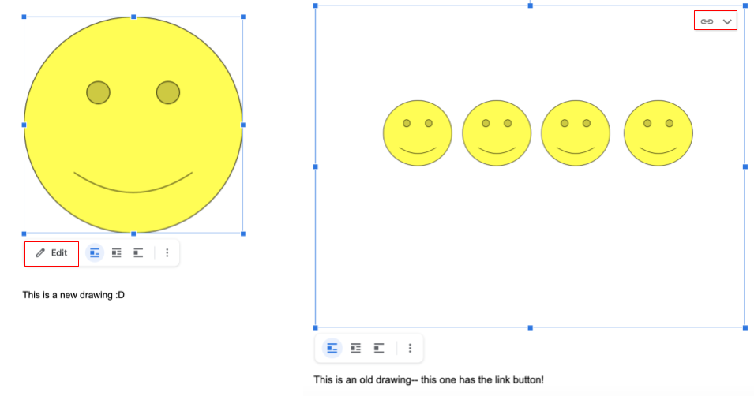
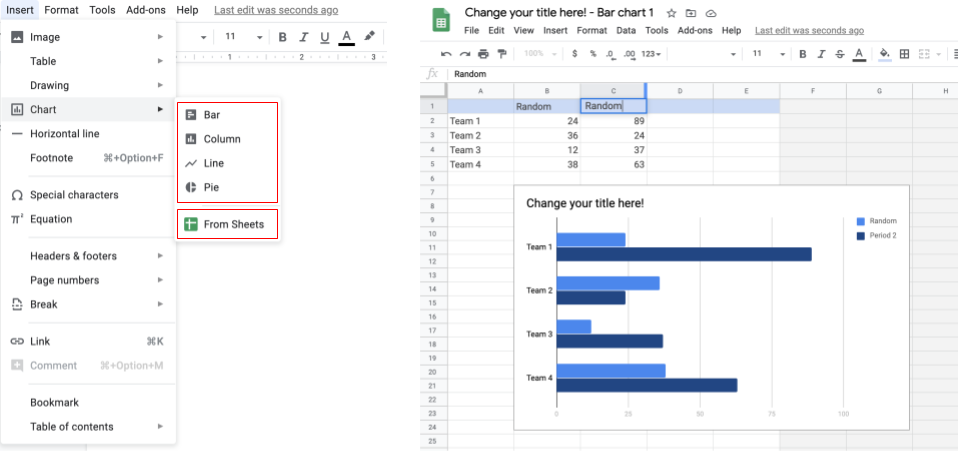
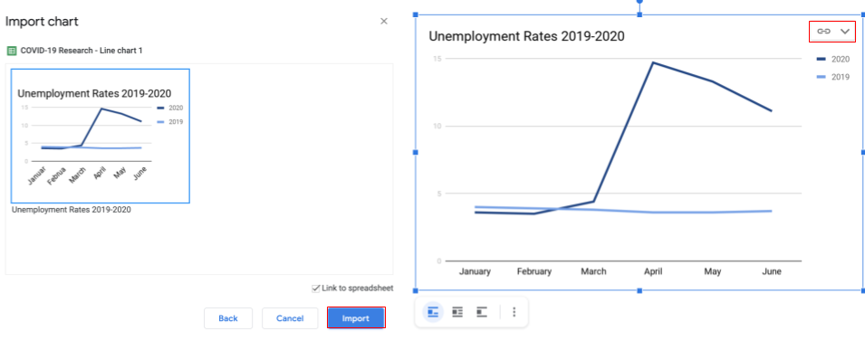
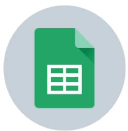
Google Sheets
Google Sheets is a great tool to list statistics/numbers and just generally list things! It's a pretty straightforward tool, but here are some of the things you can do with it!
All the font-changing (font and size) and renaming the document tips (above) are also applicable to sheets
Creating New Tabs Within Your Sheet
On the bottom of the sheet, it should say 'sheet 1'. This means that this is the first sheet or 'tab' in this document. It's possible to create more tabs within the document, and this can be really helpful for organization without creating tons of documents and folders.
To create a new tab, you simply have to click on the plus sign (+) to the left of the sheet 1 tab. This should create another tab that says sheet 2.
Commenting
To comment, you can right click on the cell that you want to comment on, or highlight a whole area and then right click.
This will open up a bunch of options. Click 'comment', or ⌘Cmd+Option+M, and then write your comment and press 'comment'
Sheets Shortcuts
There are a lot of extra functions in sheets! This can add columns and rows, do math, etc. Here is a link of the complete list of shortcuts on sheets.
Google Sheets Shortcuts
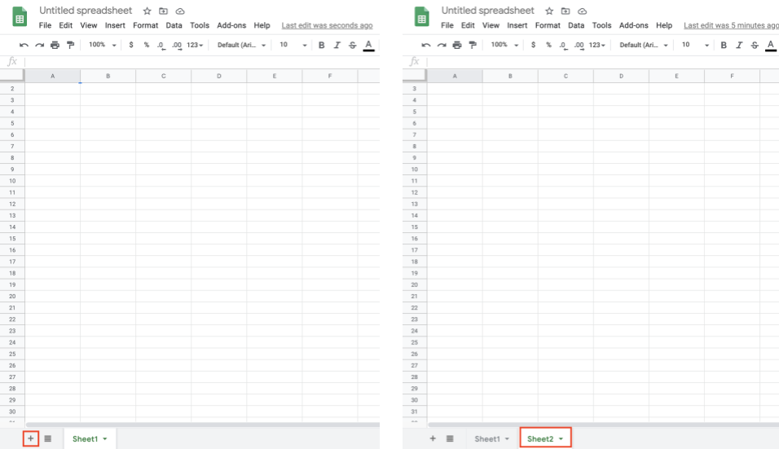

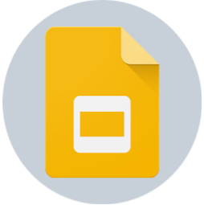
Google Slides
Google Slides is a useful tool for creating slides that you can share with others. It's also very straightforward and fairly easy to use.
Adding/Deleting Slides
In your slides document, there is a preview of all the slides on the far left-hand side. Right above this there is a small plus button. To create a new slide, press this button. If you want it to be a specific format, then press the carrot right next to it and choose the format that you like. Click it, and it will create a new slide.
To delete a slide, right click it. A menu of options should open up, click 'delete'.
Using Themes & Changing the Background
Google has built in themes. These are very basic, but easy to use. To put them onto your slides, click theme (in the bar on the top of the docs). Then, click the theme that you would like to use.
On a website called Slides Carnival, there are tons of less basic themes. These can range from super simple to more complex designs. These are also fairly easy to use.
Scroll through them. Once you've found the one that you like, scroll down (don't click view and download), and then click 'Use as a Google Slides Theme'. This will open up a preview of the slides. If you decide that you like this theme, click 'Use Template.'
This will create an entirely new slideshow title the theme's name (this is changeable). You can delete slides and create new ones, these will have the theme.
Changing the background is pretty easy! Right click the slide whose background you want to change. This should open up some options, one being 'change background'. Click this one, choose a color, and press 'change background'.
Adding Images
When adding images to a slide, you can add images from your computer, the web, or search them up in Google. All these ways are very convenient and make slides look great.
To add an image, click 'insert'. Below this you will see the option to insert an image.
Hover over this, and then click the way you want to insert an image.
If you click 'upload from computer', then you will see your files. Choose your picutre and then press insert. If you press 'search the web', then on the right hand side it will open a mini-browser. This will give you all photos that are available for reuse. Click the one that you want to use and then press insert. You can also add images from your drive, which means that if you have any images in your drive, you can insert them as well. If you have a URL of the image, then you can also insert it by this method.
Transitions
Transitions can be a great way to make slides fun! You can slide in, have slides fade, etc. Here's how to do it!
Right click the slide that you want to transition into. Choose the transition that you want. This will only apply it to one slide unless you click 'apply to all slides', in which case all slides will have the same transition.
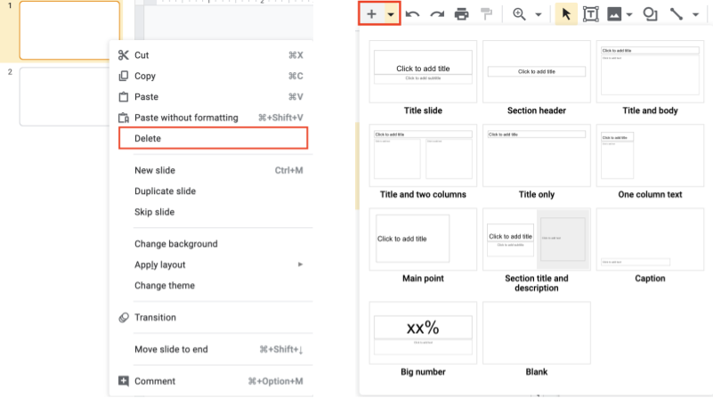
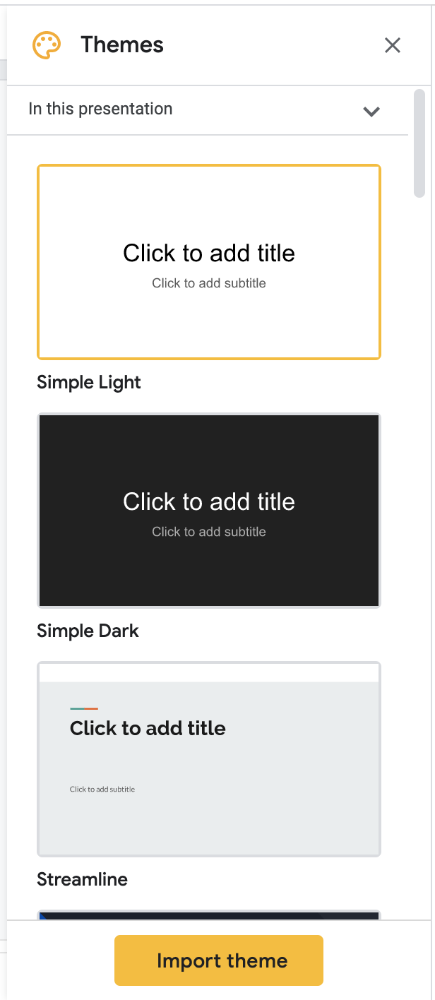
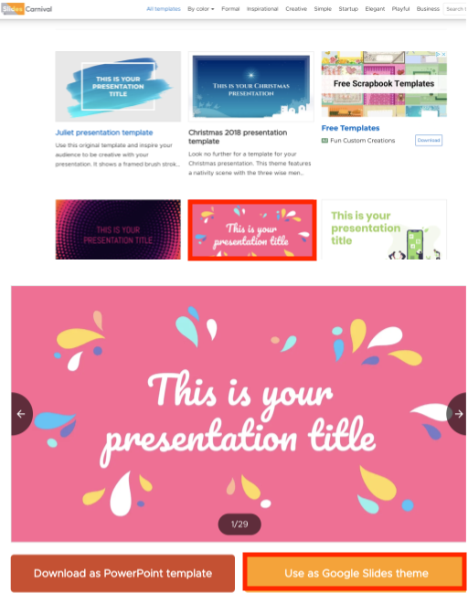
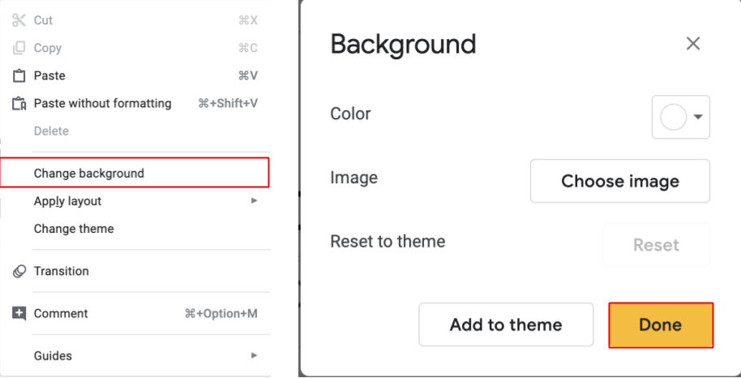
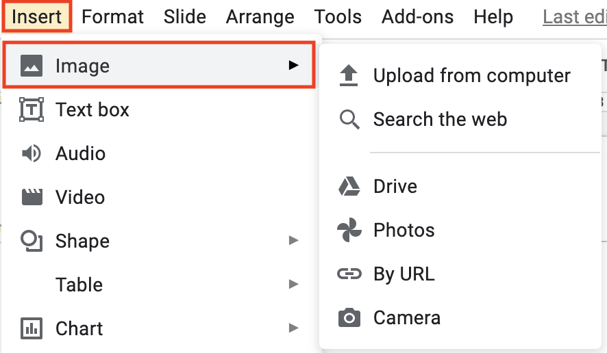
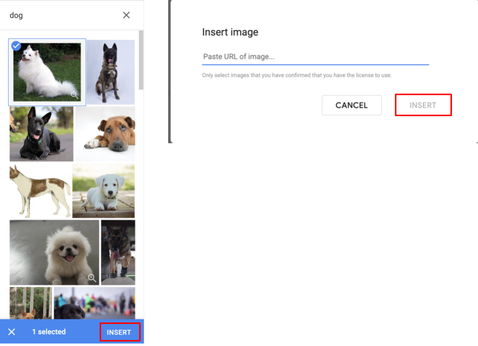
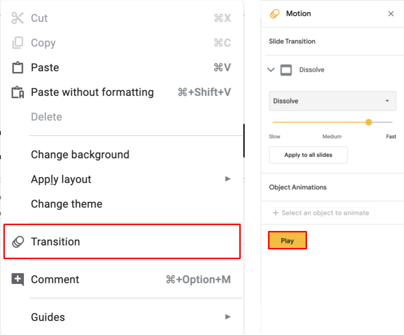